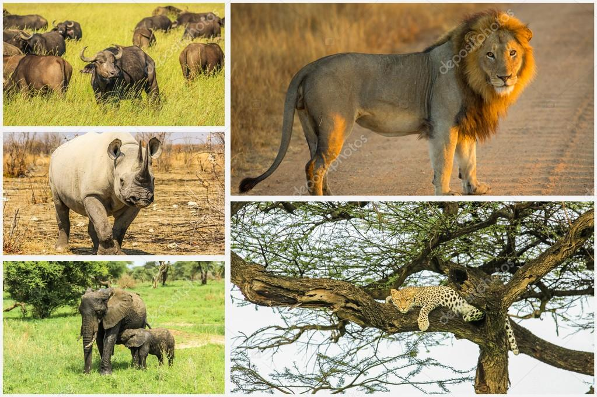

YOUR #1 STOP FOR TRAVEL ENTHUSIASTS
Appreciated for our knowledge,experience,professionalism,attention to detail, sense of humor,communicaion skills and the best travel guides.
SAFARIS
We offer a range of safari itineraries staying some of the best lodges and tented camps in the region as well as an array of optional activities to enhance your safari experience.
MOUNTAIN TREKS
Our team of Mountain Guides, Chefs and Porters are some of the most experienced on the mountain and look forward of taking you to the “Roof of Africa”.
BEACH BREAKS
Your beach holidays can be as adventurous or as relaxed as you like. To experience even more of what the various beaches have to offer, book one of our many day tours.

INDIVIDUAL TOURS
Ask us for a tailor-made safari created just for you. We pride ourselves on our commit to customer service and making your travel dreams come true.
ABOUT US
Founded in 2020, Tourice Travels is locally owned and operated by Doreen Korir and they are experts in the safari industry, specialising in Wildlife Safaris, Mountain Treks and Beach Breaks throughout Kenya. We are a KWS Licensed Tour Operator and a proud member of the Kenyan Association of Tour Operators (KATO), the Kenya Tourist Board (KTB) and the Interpretive Guides Society (IGS). We are well respected amongst peers and clients alike and are proud of our reputation within the travel industry.
There are many reasons why a safari is best with us. Here are some of them.
RESPONSIBLE TOURISM
Responsible tourism practices are important to Tourice Travels. Our values are ingrained in the culture of our business, from the way we run our office to the structure of our trips…
EXPERT GUIDES
Our guides have been hand-picked by Doreen herself for their knowledge and experience, professionalism, attention to detail, sense of humour and communication skills.
QUALITY OF SERVICE
We offer access to exclusive travel destinations and service to fully appreciate destinations through information packages. It’s not just sight-seeing but special interest traveling according to your preferences.
POPULAR DESTINATIONS
We pride ourselves on our commit to customer service and making your travel dreams come true.
TSAVO NATIONAL PARK
A 3 day safari – enjoy game drives and a true wildlife adventure
From $129.30

LAKE NAKURU NATIONAL PARK
3 days to Lake Nakuru,spa resorts,breathtaking views
From $110.33
MAASAI MARA
A 3 day safari to the world famous Masai Mara
From $91.50
MOMBASA
Your Mombasa holiday can be as adventurous or as relaxed as you like
From $80.95
GREETINGS FROM KENYA
We would like to send many greetings to our many friends and clients around the world.
Wanna meet the big 5? Call us or send us an email – If they are on vacation or otherwise prevented, we promise to show you the deputies.
Greetings from Kenya!
THE MASAI MARA AND MARA CONSERVANCIES
Masai Mara is one of Africa’s little known gems and should be on the itinerary of all lovers of wilderness and solitude. Famous for hosting the great migration of 1.5 million wildebeest and its large lion population, the landscape is incredibly diverse with the rest of the big 5,elephant,buffalo,rhino and leopard, are also a common sight. Hot-air-balloon over the Masai Mara and watch wildlife glide beneath you, giving you a different perspective of this beautiful landscape.It is a personal favourite for those of us in the Tourice Travels office.
CLIENT TESTIMONIALS

From the moment i found Tourice Travels right through to the moment Doreen dropped us off at the airport for our onward flight to Mombasa, the whole safari experience totally lived up to our expectations and beyond. Before we flew to Kenya, i bombarded Doreen with questions constantly about the safari and she replied almost immediately and answered my questions and put my mind to rest.
This vacation was a dream come true for me...and Tourice Travels did a great job of making it happen!They responded very quickly and completely to our requests for information.

Our holiday in Kenya was well organised, it was so easy to deal with Doreen and her crew. The safari was incredible in that we saw the big 5 and so many African wildlife. Accomodation was brilliant and so much more than what we expected. Food was good especially the soups, so yummy! I just loved the whole experience and would like to say a really big thank you to Tourice Travels.Asanteni sana.It was an experience of a lifetime.
Tourice Travels:
Exceeding expectations: In the two years we lived in Kenya, we used Tourice Travels to arrange several trips for us and for our friends and family. Without exception they did a great job!
We've lived in Kenya for over 4 years and have used several other safari companies during that time. But, the care and support we got from Tourice Travels was second to none.
TOURICE TRAVELS